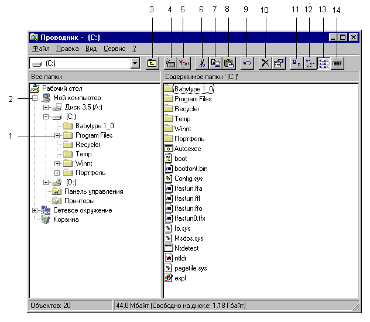
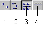

Проводник Windows специально предназначен для просмотра структуры папок и данных и оперирования с ними. Для запуска Проводника
Окно Проводника разбито на две панели — левую и правую. В левой панели представлена иерархическая структура папок. Файлы в ней не отображаются. Активная папка выделена синим цветом.
В правой панели отображается содержимое активной папки.

Рис. 1: Окно Проводника
1, 2 — маркеры отображения; 3 — кнопка “Переход на один уровень вверх”; 4 — кнопка “Подключить сетевой диск”; 5 — кнопка “Отключить сетевой диск”; 6 — кнопка “Удалить в буфер”; 7 — кнопка “Копировать в буфер”; 8— кнопка “Вставить из буфера”; 9 — кнопка “Отменить удаление”; 10 — кнопка “Удалить”; 11, 12, 13, 14 — кнопки управления видом правой панели Проводника.
Слева от некоторых значков папок в левой панели находятся маркеры отображения (1, 2).
Папка “Рабочий стол” является папкой нулевого уровня; папка “Мой компьютер” — папкой первого уровня; папки “Диск 3,5 (А:)” и “(С:)” — папками второго уровня и т.д.
Для того, чтобы перейти на один уровень вверх, либо щелкните кнопку “Переход на один уровень вверх” , либо нажмите клавишу BACKSPACE.
Для того чтобы перейти в нужную папку, либо щелкните ее один раз в левой панели, либо щелкните дважды в правой. Содержимое выбранной папки должно появиться в правой панели Проводника.
Если нужная папка не отображена на экране, отыщите ее, используя маркеры отображения в левой панели.
Если панель инструментов Проводника не видна на экране, включите ее, выбрав команду “Панель инструментов” в меню Вид. С помощью четырех кнопок этой панели можно изменять тип представления папок и файлов в правом окне.

Рис. 2:
Кнопки управления представлением папок и файлов в правой панели Проводника:
1 — крупные значки; 2 — мелкие значки; 3 — список; 4 — таблица.
На рис. 2 выбран тип представления “Список”.
|
Клавиша/сочетание |
Действие |
|
CTRL+A |
Выделение всех объектов |
|
F5 |
Обновление изображения в окне |
|
BACKSPACE |
Переход на один уровень вверх |
|
SHIFT при нажатии кнопки закрытия окна |
Закрытие выделенной папки и всех родительских папок |